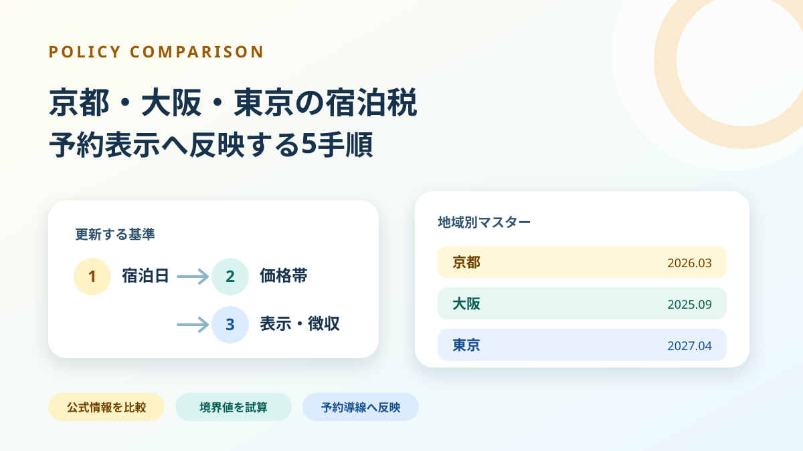
実務ガイド2026.07.18
京都・大阪・東京の宿泊税を予約表示へ反映する5手順
京都・大阪・東京では宿泊税の税率、課税対象、施行日が異なります。予約日ではなく宿泊日を基準に、料金マスター、予約画面、事前案内、現地徴収、領収書を更新する手順を公式資料から整理します。
記事を読むNews & Insight
公的統計の更新、独自分析、業界ニュースをひとつに。事実と解釈を分け、実務で次に見るべき変化を短く届けます。
当サイト独自の分析

京都・大阪・東京では宿泊税の税率、課税対象、施行日が異なります。予約日ではなく宿泊日を基準に、料金マスター、予約画面、事前案内、現地徴収、領収書を更新する手順を公式資料から整理します。
記事を読む新しい情報から順に掲載
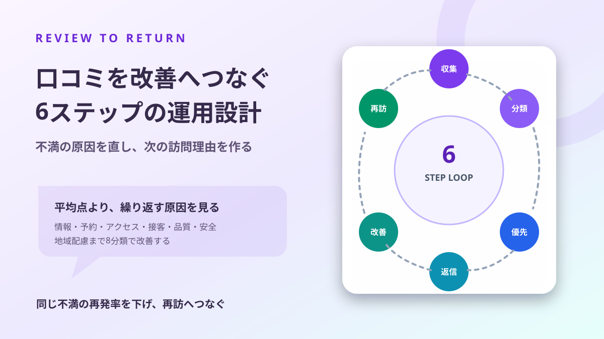
口コミへの定型返信だけでは、商品も再訪率も変わりません。実体験に基づく声を集め、8分類で原因を特定し、現場改善と次の訪問理由へつなぐ6ステップを解説します。
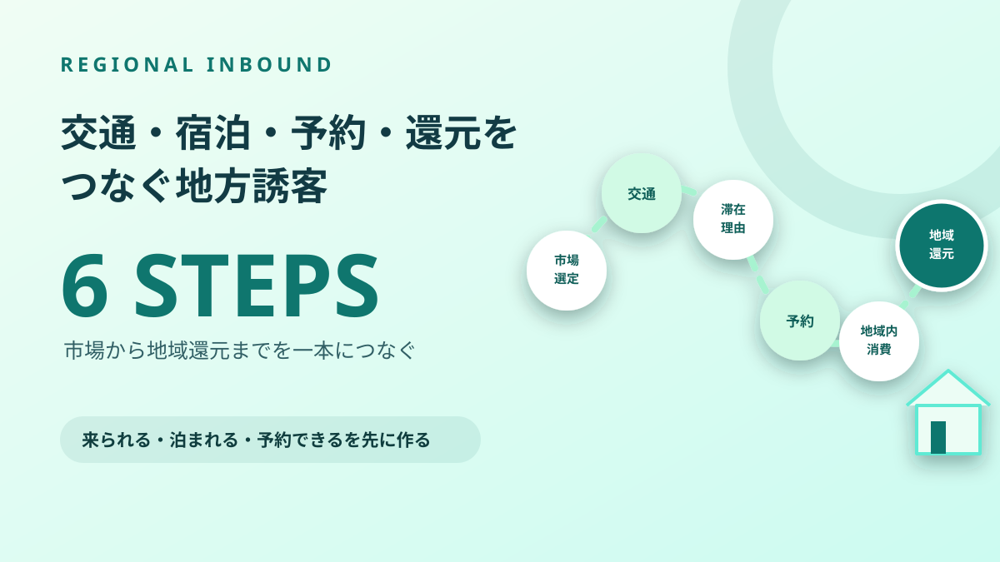
地方の認知度を上げても、到達経路、泊まる理由、予約商品、地域内消費がつながらなければ宿泊は増えません。市場選定から住民・事業者への還元までを6段階で設計します。
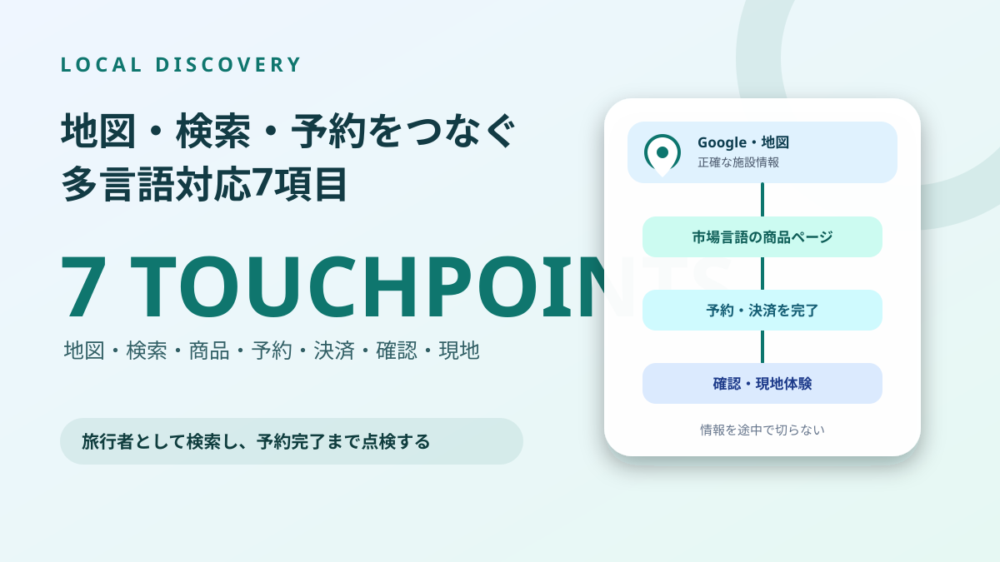
英語ページを作っても、地図の営業時間、写真、商品、予約条件が日本語のままでは来店や予約につながりません。Googleビジネスプロフィールから予約完了までを7項目で揃える方法を解説します。
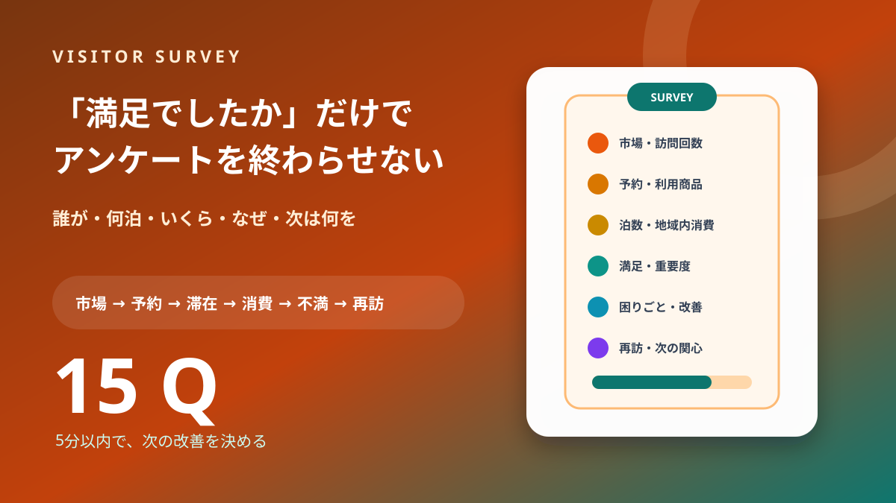
総合満足度だけでは、何を直せば消費・宿泊・再訪が増えるか分かりません。市場、訪問回数、泊数、予約、消費、要素別満足、不満、再訪意向を15問でつなぎます。

訪日客数だけで重点市場を決めると、単価・成長性・交通・地域との相性を見落とします。市場規模、消費価値、伸び、アクセス、地域適合性の5指標で候補を採点する実務手順を解説します。
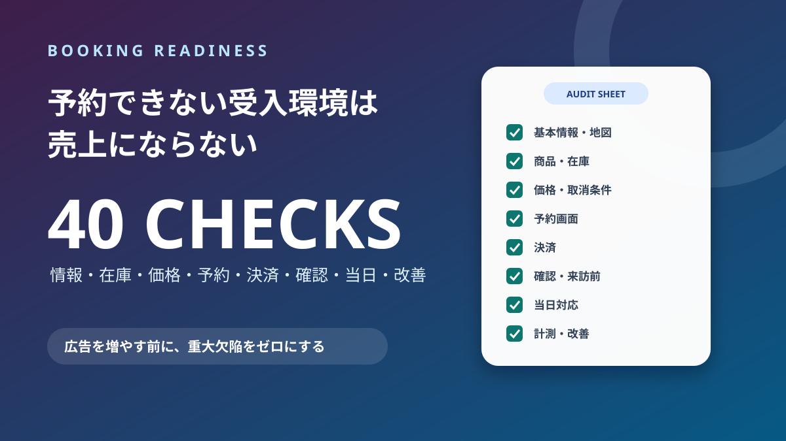
多言語でPRしても、価格、空き状況、取消条件、海外発行カード、確認メール、集合場所が不明なら予約は止まります。旅行者として点検できる40項目のチェックリストを掲載します。

高く売ることだけが高付加価値化ではありません。誰のどんな時間を変える商品かを定義し、必要利益、販売手数料、受入上限、予約期限、取消・代替条件まで一枚で設計します。
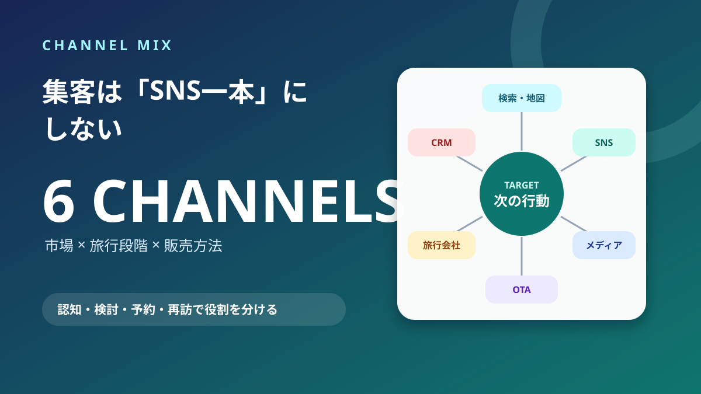
同じSNS施策を全市場へ配信しても、情報収集、予約方法、訪日経験が違えば成果は揃いません。市場と旅行段階に合わせ、検索・地図、SNS、メディア、OTA、旅行会社、CRMを配分する方法を解説します。
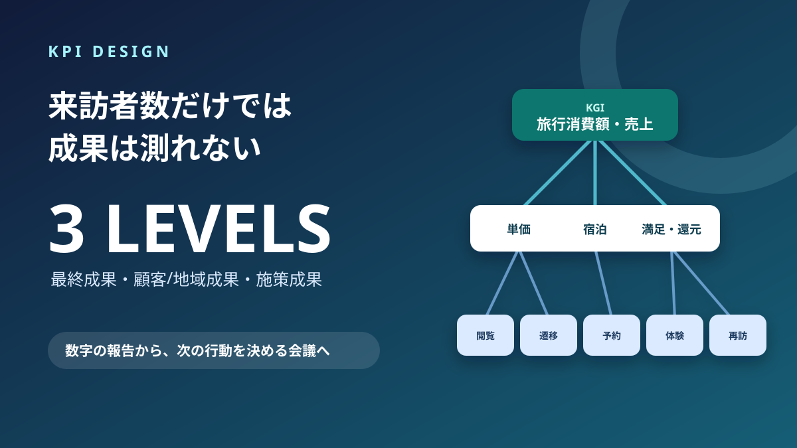
PVや来訪者数だけを追っても、地域や事業の成果は分かりません。旅行消費額をKGIに、単価・宿泊・平準化・満足・地域還元と施策指標をつなぐKPIツリーを解説します。
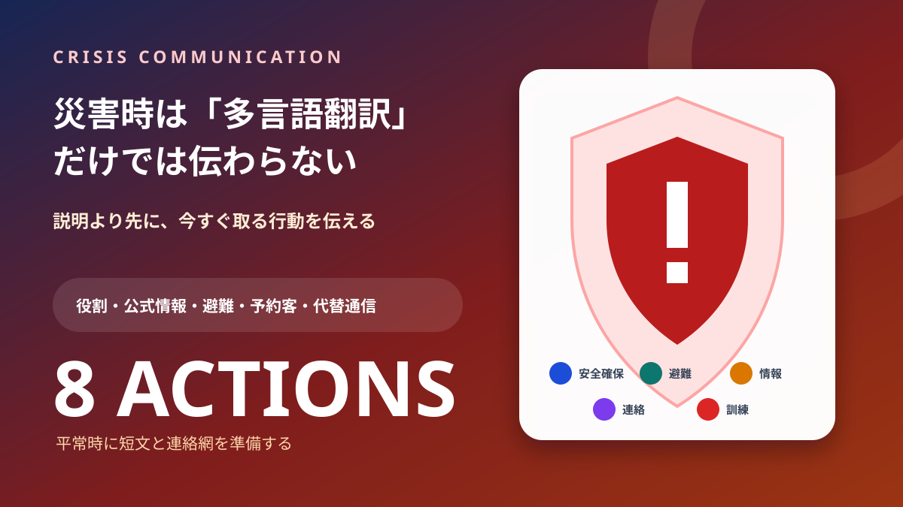
災害用語を翻訳しても、旅行者が今どこへ動けばよいか分からなければ安全情報になりません。役割、公式情報源、短い行動文、避難、予約客、代替通信、訓練まで8項目で整えます。
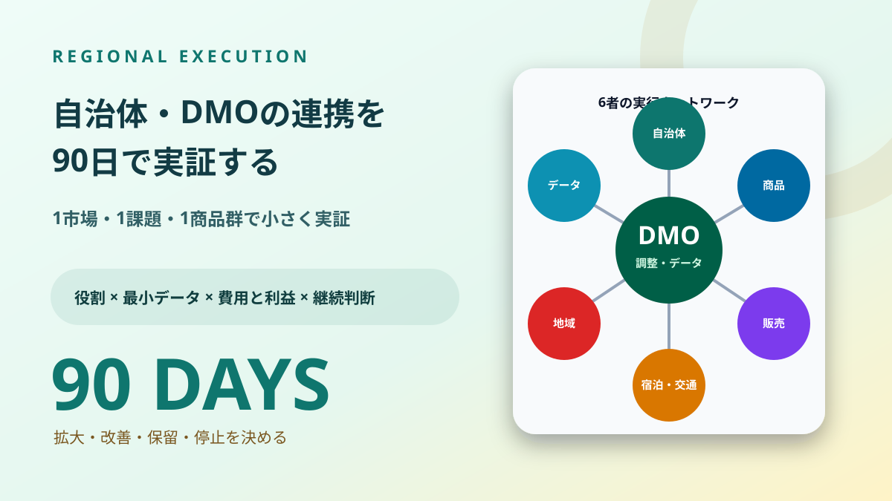
関係者を集めても、決める人、在庫を出す人、売る人、データを返す人が曖昧なら施策は止まります。1市場・1商品・90日の実証を、役割、最小データ、費用と利益、継続判断まで設計します。
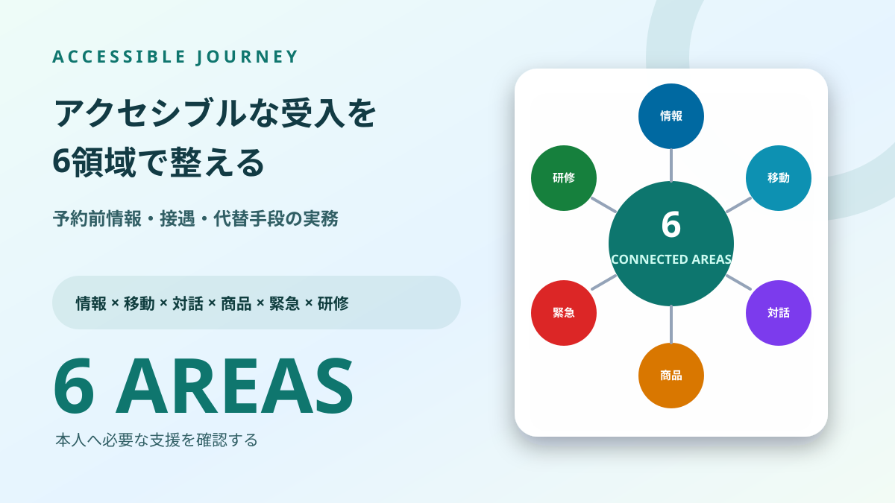
スロープや多目的トイレの有無だけでは、旅行者は利用可否を判断できません。経路、寸法、支援範囲、コミュニケーション、食事・感覚、緊急時、代替案を予約前から伝えます。
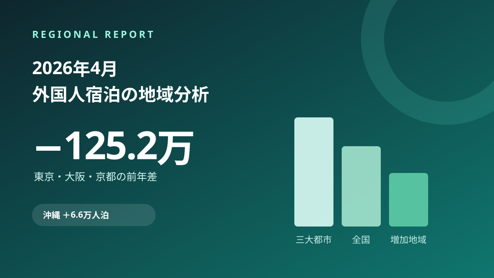
2026年4月の外国人延べ宿泊者数は、客室数20室以上の施設で全国1,341万人泊。東京・大阪・京都は合計125万人泊減る一方、沖縄は増加数首位、茨城は前年比98.8%増でした。地域差を国籍別の寄与まで分解します。
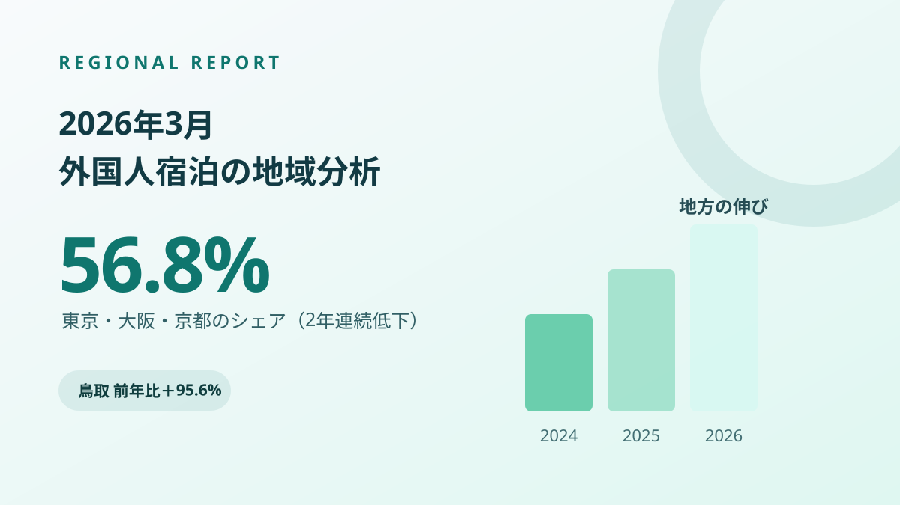
2026年3月の外国人延べ宿泊者数は全国1,250万人泊。東京・大阪・京都の構成比は2年連続で低下し、鳥取・茨城・福島は前年比5割超。増減を国籍別の寄与まで分解し、今後の見通しを整理します。
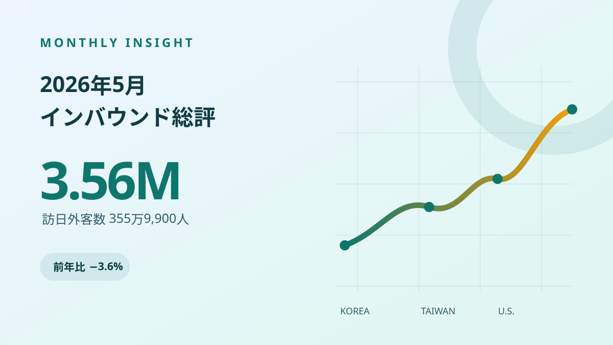
訪日外客数は355万9,900人で前年同月比3.6%減。中国が6割減る一方、韓国・台湾など19市場は5月として過去最高でした。市場構成の変化と今後の見通しを整理します。